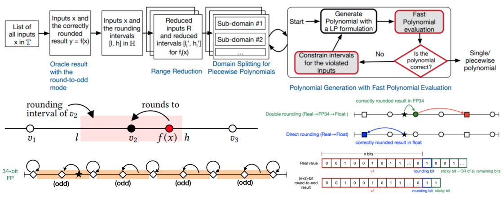

|

|
|
Abstract:
This paper proposes fast polynomial evaluation methods for correctly
rounded elementary functions generated using our RLIBM approach. The
resulting functions produce correct results for all inputs with
multiple representations and rounding modes. Given an oracle, the
RLIBM approach approximates the correctly rounded result rather than
the real value of an elementary function. A key observation is that
there is an interval of real values around the correctly rounded
result such that any real value in it rounds to the correct
result. This interval is the maximum freedom available to RLIBM's
polynomial generation procedure. Subsequently, the problem of
generating correctly rounded elementary functions using these
intervals can be structured as a linear programming problem. Our prior
work on the RLIBM approach uses Horner's method for polynomial
evaluation.
This paper explores polynomial evaluation techniques such as Knuth's
coefficient adaptation procedure, parallel execution of operations
using Estrin's procedure, and the use of fused multiply-add operations
in the context of the RLIBM approach. If we take the polynomial
generated by the RLIBM approach and subsequently perform polynomial
evaluation optimizations, it results in incorrect results due to
rounding errors during polynomial evaluation. Hence, we propose to
integrate the fast polynomial evaluation procedure in the RLIBM's
polynomial generation process. Our new polynomial evaluation
procedure that combines parallel execution with fused multiply-add
operations outperforms the Horner's method used by RLIBM's correctly
rounded functions.
We show the resulting polynomials for 32-bit float are not only
correct but also faster than prior functions in RLIBM by 24%.
|

![[PHOTO]](../../images/knight_small.png)